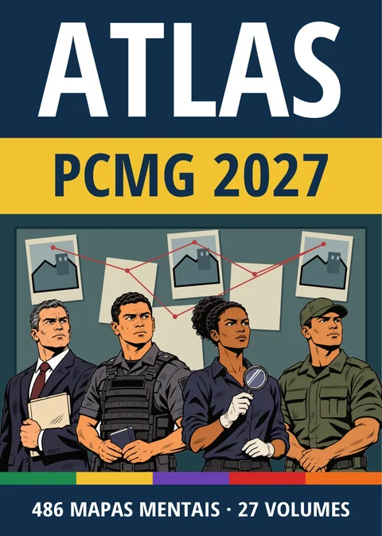
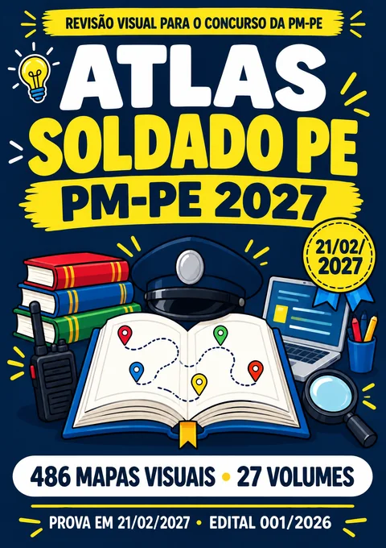

ESCOLHA O SEU ATLAS
Revisão do edital em mapas
Toque na capa do concurso que você vai fazer
TJ SP · 2027
Atlas da Revisão TJ SP 2027
Revisão visual para o concurso do TJ SP
486 mapas27 volumesProva 14/03/2027
VER MATERIAL

PCMG · 2027
Atlas PCMG 2027
Revisão em mapas para o concurso da PCMG
486 mapas27 volumes
VER MATERIAL

PM-PE · 2027
Atlas Soldado PE
Revisão visual para o concurso da PM-PE
486 mapas27 volumesProva 21/02/2027
VER MATERIAL
Atlas Revisão · por Hugo Teixeira
@revisaoatlas
Termos de uso · Política de privacidade